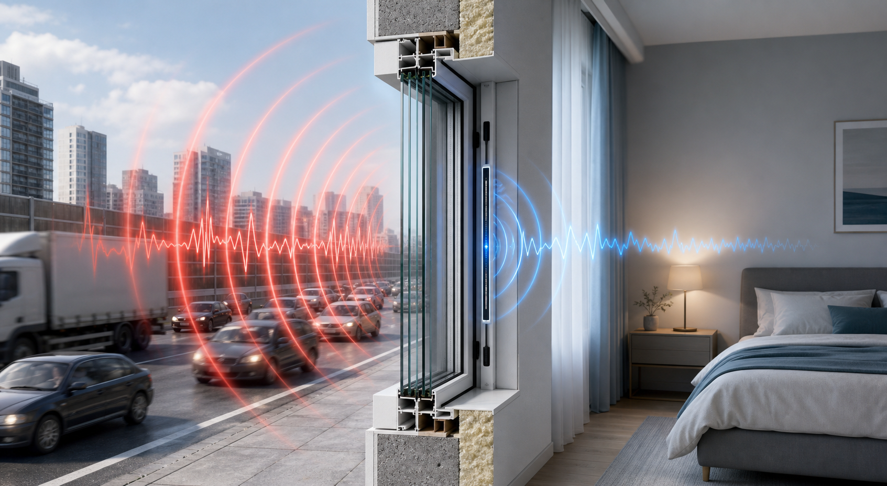
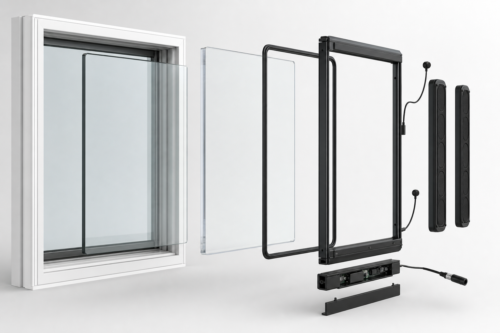

Retrofit ANC Insert
A removable inner window with a rigid clear panel, compression seals, embedded microphones, and slim speaker bars. It works even when the active system is off because the passive layer still helps.
Design plan
A hybrid window insert that seals out mid and high frequencies, then uses active control to soften the low-frequency rumble from trucks, loud cars, trains, aircraft, and building equipment.
Core concept
The product should not try to erase every sound. A sealed insert, laminated panel, and air gap reduce broad traffic noise first. Microphones, DSP, and frame-mounted emitters then reduce the slow, heavy pressure waves that conventional windows struggle to stop.
Exterior microphones listen early so the controller has time to predict incoming low-frequency noise.
Clear laminated acrylic or glass, a sealed air gap, and compression gaskets provide immediate reduction.
Speaker bars or exciters in the frame emit carefully timed anti-noise toward the room side of the window.
Error microphones near the window and bed-height calibration points tune the adaptive filter in real time.

Three build paths
Each design solves a different market. The retrofit insert is the best MVP because installation is simpler and the customer pain is obvious: sleeping near highways, airports, rail lines, and busy streets.
A removable inner window with a rigid clear panel, compression seals, embedded microphones, and slim speaker bars. It works even when the active system is off because the passive layer still helps.
A replacement frame with factory-installed reference mics, interior error mics, acoustic emitters, and a hidden DSP module. Cleaner and more powerful, but it needs installer and manufacturer support.
Actuators bonded to the glass or frame counter-vibrate the pane before it radiates sound into the room. This is elegant, but it belongs after the simpler insert proves the acoustic and business case.

System design
Good cancellation depends on geometry. The controller needs an early reference signal, a predictable speaker-to-room path, and feedback from the actual quiet zone. During setup, the product should run a short calibration sweep and learn the room.
Prototype roadmap
The prototype should prove useful before the algorithm is perfect. A well-sealed insert is already valuable; active cancellation should be the extra capability that reduces nighttime rumble.
Record baseline traffic and aircraft noise at the window, bed height, and room corners.
Use laminated acrylic or glass, a rigid frame, and EPDM or silicone compression gaskets.
Prototype with two exterior mics, two interior mics, and four low-profile frame speakers.
Use an FxLMS-style controller, then compare active-off and active-on recordings under 400 Hz.
Test steady rumble, truck pass-bys, aircraft events, fan hum, and quiet-night false activation.
MVP targets
Best first bet
This is the strongest wedge because the problem is painful, the room boundary is defined, and customers can understand the result without needing a full home renovation.